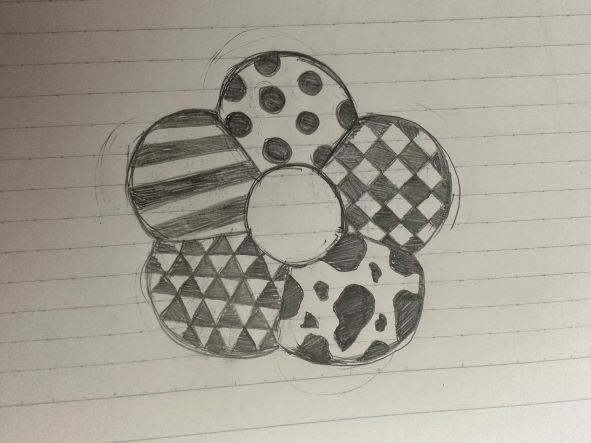
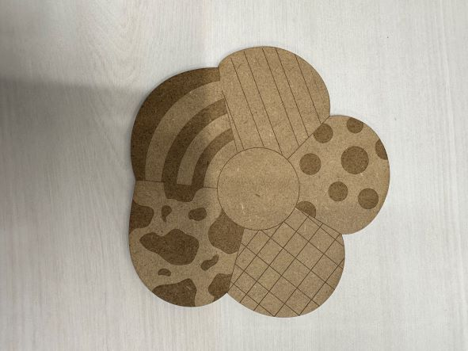

レーザーカッティング
１．花形コースター
2.手書きスケッチ

3.実際に作った写真

4.設計ファイル
dxfファイル
５．作品の説明
まず、私は花の形が個人的にかわいいと感じるので、花の形にしました。
そして、その花びら一つ一つが柄・模様が違うと少し変わったデザインになるので見てて楽しくなるのではないかと考えました。
いろんな柄を使うことで花びらが際立つと思ってこのデザインにしました。
６．作品のプロセスの中で調べたこと
スケッチの写真をFusion360に取り込みその上から書いていきました。
ファブラボのスタッフさんに教えてもらい、一番外側の切り取る部分を（オブジェクト→パス→連結）で連結しました。
取り消しの仕方
Illustratorでの取り消し・やり直しを調べました。
7. 感想
自分で作ったデザインがファブラボのIllustratorに移すと一生懸命作ったデザインが崩れてしまったので大変でした。
次は作ったデザインのものを組み立てるようなモノを作ってみたいと思いました。
レーザーカッターで木以外のものを使うこともできるときいたのでいろんな種類のモノを作っていきたいと思った。